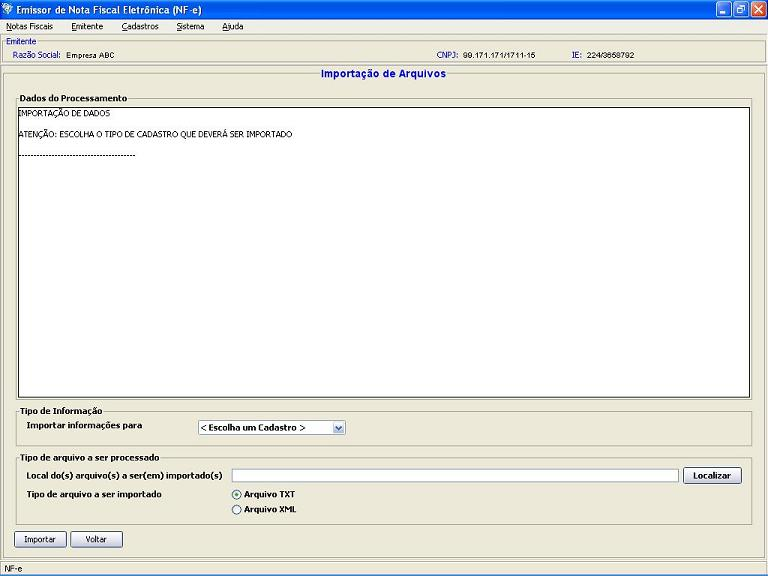
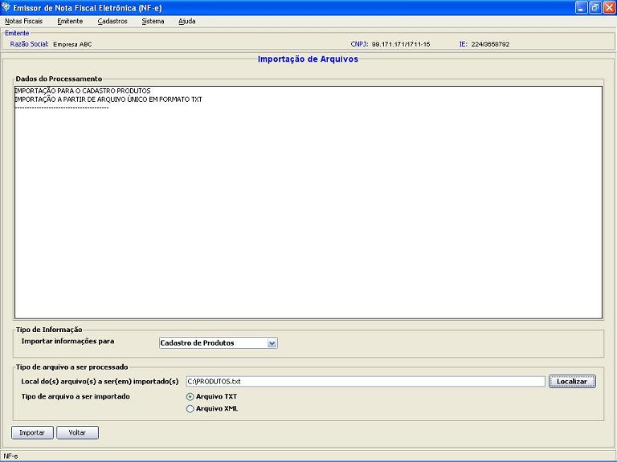
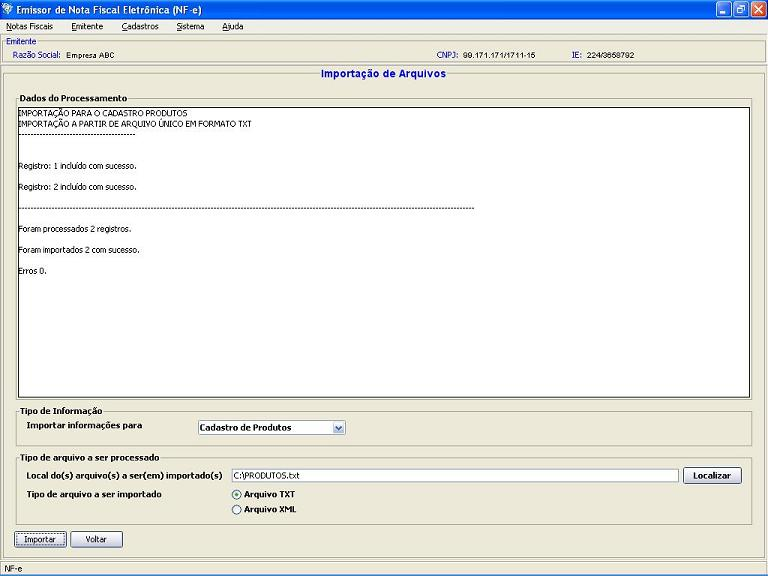
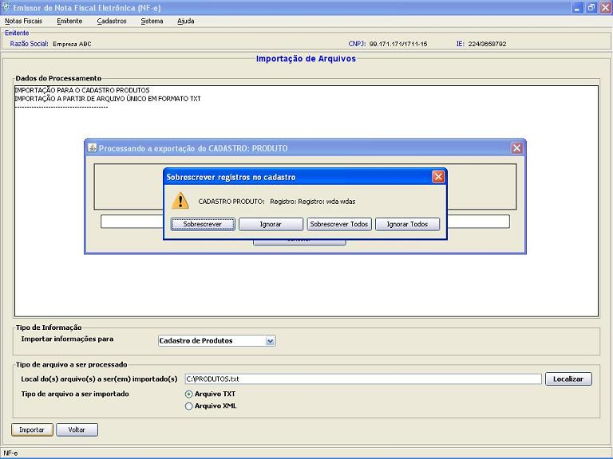

Software Emissor NF-e
Importação
de Dados
O processo de importação permite a
carga dos arquivos gerados pelo Software de volta ou em outro Software
similar, facilitando a troca de informações.
Pré-condição
-Um
emitente
deverá estar previamente iniciado.
- Acessar o menu: Sistema
-> Importar

- Selecionar o tipo
de informação a ser importado: Emitentes, Clientes, Produtos, Transportadoras ou Notas Fiscais
- Selecionar o tipo
de arquivo a
ser importado: "Arquivo
TXT" ou "Arquivo XML"
- Caso Arquivo TXT,
escolher o arquivo com os dados, digitando ou clicando no
botão Localizar
e
selecionando arquivo. Caso
Arquivo XML,
escolher o diretório com os arquivos a serem importados
digitando ou clicando no botão Localizar e
selecionando o diretório.

- Clicar em Importar
- Ao final, será
apresentado o resultado da importação no quadro Dados do Processamento

Considerações
sobre a importação:
- Para
Importação de Notas Fiscais:
- Só é
possível importar NF-e's do MESMO emitente, ou seja, o CNPJ
emitente da NF-e deve ser IGUAL ao CNPJ emitente atual do software
- Importação
TXT:
- TODAS as NF-e's importadas
de arquivo TXT serão colocadas com a
situação "Em
Digitação" no Software
- Caso já exista
a NF-e no Software (verifica-se a série,
número, ano, mês e CNPJ emitente), o aplicativo
perguntará ao usuário se deseja sobrescrever
- Importação
XML:
- Caso já exista
a NF-e no Software (verifica-se a Chave de Acesso da NF-e), o
aplicativo perguntará ao
usuário se deseja sobrescrever
- Para
Importação de Emitentes:
- Caso já exista o
cadastro no Software (verifica-se o CNPJ do emitente), o aplicativo
perguntará ao
usuário se deseja sobrescrever
- Para
Importação de Cadastro de produto, clientes e
transportadoras:
- As
informações podem vir de do cadastro de outros
emitentes
- Caso já exista o
cadastro no Software, o aplicativo perguntará ao
usuário se deseja sobrescrever
- Para Cliente,
verificará se já existe o CNPJ/CPF cadastrado
- Para Produto,
verificará se já existe o código do
produto cadastrado
- Para Transportadora,
verificará se já existe o CNPJ/CPF já
cadastrado
Caso já existam os cadastros, o aplicativo
perguntará se deseja sobrescrever: